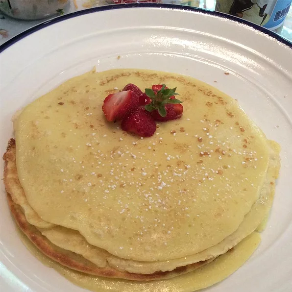

Swedish Pancakes

Description
This is an authentic Swedish pancake recipe that was taught to my father by his mother, who was born in Sweden. My father then passed it to me. Kids love them. Never any leftovers when I make them. To serve, you can spoon melted butter over pancakes and sprinkle with sugar, or serve with lingonberry sauce. You can also use the batter to make crepes.
Prep:
10 mins
Cook:
2 mins
Total:
12 mins
Servings:
13
Yields:
52 mini pancakes
Ingredients
- 3 eggs
- 1¼ cups milk
- ¾ cup all-purpose flour
- 1 tablespoon white sugar
- ½ teaspoon salt
- 1 tablespoon butter, or as needed
Steps
-
Beat eggs in a bowl with an electric mixer until thick and lemon-colored, 3 to 5 minutes. Stir in milk.
-
Sift flour, sugar, and salt together in a bowl. Add to egg mixture; mix until batter is smooth.
-
Grease a griddle with butter; heat over medium heat. Drop tablespoonfuls of batter on the griddle; spread to make thin pancakes. Cook until light brown on bottom, 1 to 2 minutes. Flip and continue cooking until second side is light brown, 1 to 2 minutes more. Repeat with remaining batter.